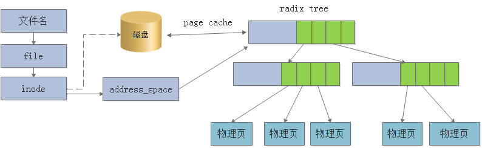
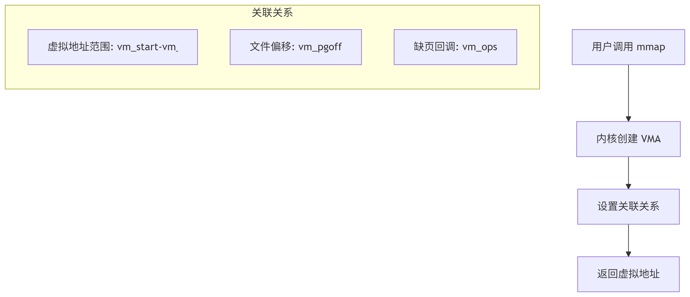
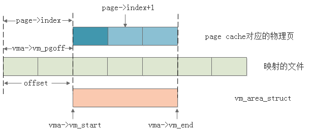
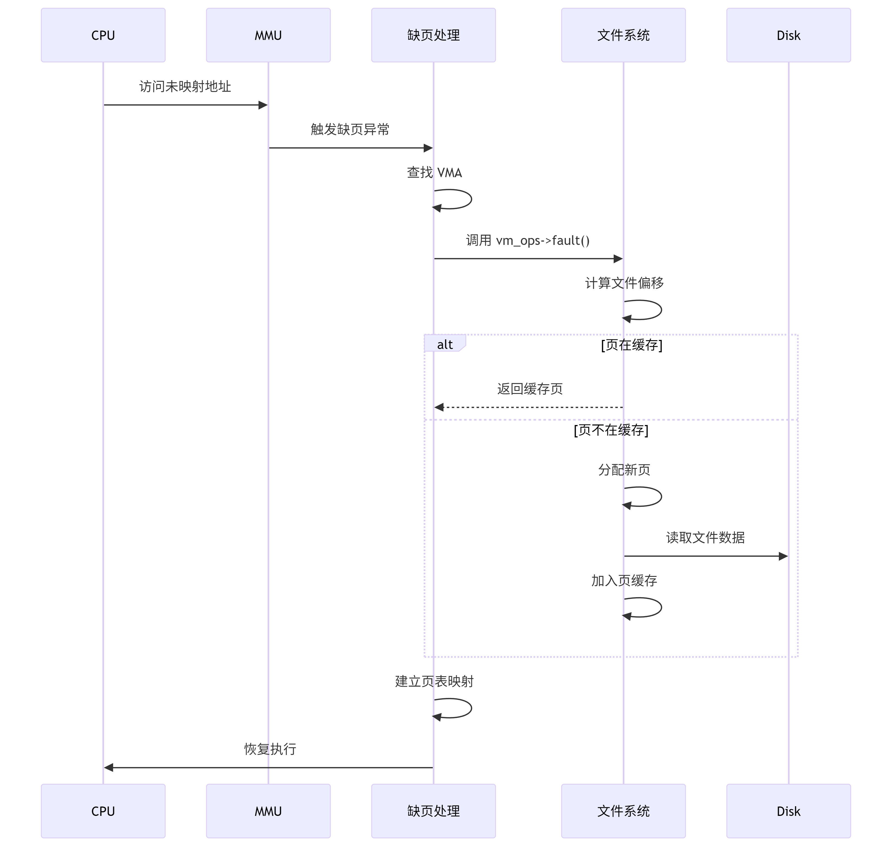

CH3-mmap详解与基于IMX6ULL嵌入式驱动开发实践
映射关系
以下是针对 Linux 内存映射的四种组合及其应用场景的详细分析：
1. 文件共享映射（File Shared Mapping）
特点：
- 共享性：多个进程共享同一份物理内存，修改会立即反映到其他进程。
- 持久化：修改内容会写回磁盘文件（若文件支持）。
- 实现方式：通过
mmap的MAP_SHARED标志实现。 - 内核机制：依赖文件系统的缓冲机制，所有修改需通过页缓存同步。
应用场景：
- 进程间通信（IPC）：如共享文件的读写操作。
- 数据库缓存：将数据库文件映射到内存，多个进程直接操作内存实现高效访问。
- 多进程日志记录：多个进程共享同一日志文件的映射区域，减少磁盘 I/O。
示例代码：
1 | int fd = open("shared_file", O_RDWR); |
2. 文件私有映射（File Private Mapping）
特点：
- 独占性：每个进程拥有独立的私有副本，修改仅影响自身。
- 复制-on-write（CoW）：初始映射时共享物理页，首次写入时才会复制新页。
- 实现方式：通过
mmap的MAP_PRIVATE标志实现。 - 内核机制：依赖页面复制机制，避免进程间干扰。
应用场景：
- 程序代码段（.text）：每个进程独立执行代码，无需共享。
- 动态链接库（DLL）：共享库的代码段通常以私有方式映射，确保安全性。
- 临时数据处理：进程需要基于文件数据进行独立修改，但不希望影响原文件。
示例代码：
1 | int fd = open("private_file", O_RDWR); |
3. 匿名共享映射（Anonymous Shared Mapping）
特点：
- 共享性：多个进程共享同一块匿名内存（无关联文件）。
- 非持久化：内存内容随进程终止而消失。
- 实现方式：通过
mmap的MAP_ANONYMOUS | MAP_SHARED标志实现。 - 内核机制：直接分配物理页帧，无需文件系统支持。
应用场景：
- 进程间共享缓冲区：如父进程与子进程共享一块内存传递数据。
- 多线程通信：线程间共享数据无需通过文件系统。
- GPU 显存映射：部分驱动通过匿名共享映射暴露显存给用户空间。
示例代码：
1 | void *addr = mmap(NULL, size, PROT_READ | PROT_WRITE, MAP_ANONYMOUS | MAP_SHARED, -1, 0); |
4. 匿名私有映射（Anonymous Private Mapping）
特点：
- 独占性：仅当前进程可见，修改不影响其他进程。
- 非持久化：内存内容随进程终止而释放。
- 实现方式：
mmap的MAP_ANONYMOUS | MAP_PRIVATE标志。brk/sbrk系统调用扩展堆（mmap_base到brk区域）。
- 内核机制：直接分配物理页帧，无需文件系统支持。
应用场景：
- 进程堆（Heap）：动态分配的内存（
malloc/free管理）。 - 栈（Stack）：函数调用的局部变量和返回地址。
- 临时数据存储：进程内部需要频繁分配和释放的内存。
示例代码：
1 | // 通过 mmap 实现 |
映射组合与进程地址空间的关系
根据您提供的图示，进程地址空间的关键区域如下：
.text和.rodata：文件私有映射（代码段和只读数据段）。.data和.bss：文件私有映射（初始化和未初始化数据段）。- 堆（Heap）：匿名私有映射（通过
mmap或brk分配）。 - 栈（Stack）：匿名私有映射（由内核自动管理）。
- 共享内存（mmap 区域）：匿名共享映射（如
shmat或mmap共享内存）。
总结
| 映射类型 | 共享性 | 持久化 | 应用场景 |
|---|---|---|---|
| 文件共享映射 | 多进程共享 | 是 | 进程间文件级通信 |
| 文件私有映射 | 进程私有 | 是 | 程序代码段、动态链接库 |
| 匿名共享映射 | 多进程共享 | 否 | 进程间缓冲区、GPU显存映射 |
| 匿名私有映射 | 进程私有 | 否 | 堆、栈、临时数据存储 |
文件映射
文件映射的三要素
| 要素 | 说明 | 关键作用 |
|---|---|---|
| 文件名 | 用户空间可见的文件标识 | 映射的入口点 |
| 文件偏移 | 文件中要映射的位置 | 确定映射起点 |
| 虚拟地址 | 进程地址空间的目标位置 | 用户访问入口 |

文件映射 (mmap) 底层机制深度分析
映射建立阶段
零物理分配：仅建立虚拟地址映射，不分配物理页
三重绑定：
- 虚拟地址 ↔ 文件偏移 (
vm_pgoff) - 虚拟区域 ↔ 文件对象 (
vm_file) - 操作函数 ↔ 文件系统 (
vm_ops)

我们首先需要知道映射的关联关系
1
2
3
4
5
6
7// 从虚拟地址到文件页索引
pgoff_t page_index = vma->vm_pgoff +
((vmf->address - vma->vm_start) >> PAGE_SHIFT);
// 从文件页索引到虚拟地址
void *vaddr = vma->vm_start +
((page_index - vma->vm_pgoff) << PAGE_SHIFT);vma->vm_pgoffunsigned long映射的文件起始页偏移 file_offset / PAGE_SIZEpage->indexpgoff_t页在文件中的索引 (file_offset + page_offset) / PAGE_SIZEvma->vm_startunsigned long虚拟地址起始 用户指定 vma->vm_endunsigned long虚拟地址结束 vm_start + length- 虚拟地址 ↔ 文件偏移 (
缺页处理阶段

1 | static vm_fault_t filemap_fault(struct vm_fault *vmf) |
匿名映射
核心概念
匿名映射是一种没有文件背景 (no file-backing) 的内存映射。它不与任何磁盘文件相关联，其内容初始化为零，并且其生命周期与创建它的进程紧密绑定（或通过共享映射继承给子进程）。
调用方式：
在调用 mmap() 时，通过传递 MAP_ANONYMOUS 标志（或 MAP_ANON）并将 fd 参数设置为 -1 来创建。
1 | void *addr = mmap(NULL, length, PROT_READ | PROT_WRITE, MAP_PRIVATE | MAP_ANONYMOUS, -1, 0); |
与文件映射的对比分析
| 要素 | 文件映射 (File-backed) | 匿名映射 (Anonymous) |
|---|---|---|
| 文件名 | 有关键作用 是映射的入口点，用于找到并关联到 struct file 对象。 |
不存在 映射的创建不依赖于任何文件。 |
| 文件偏移 | 有关键作用 确定从文件的哪个位置开始映射。 |
无意义 通常设置为 0，因为不存在文件偏移的概念。 |
| 虚拟地址 | 用户访问入口 进程通过该地址范围访问被映射的文件内容。 |
用户访问入口 进程通过该地址范围访问新分配的匿名内存。 |
结论： 匿名映射移除了“文件名”和“文件偏移”两个要素，仅保留“虚拟地址”作为用户空间的访问入口。这使得它从一个文件I/O机制转变为一个纯粹的动态内存分配机制。
2. 映射建立阶段机制
- 零物理分配：与文件映射一致，建立时只分配虚拟地址空间（VMA结构），不分配物理页。
3. 缺页处理阶段机制对比
这是匿名映射与文件映射最核心的差异所在。当进程首次访问匿名映射的虚拟地址时，也会触发缺页中断。但由于没有文件背景，其处理逻辑截然不同。
关键区别：
- 物理页来源：文件映射从页缓存 (page cache) 中获取（如果不存在则从磁盘读取）。匿名映射直接从伙伴系统 alloc_pages() 分配全新的物理页。
- 内容初始化：文件映射的内容最终来自于磁盘文件。匿名映射的内容被初始化为零（这就是为什么
malloc（可能基于匿名映射）得到的内存是清零的）。 - 换出 (Swap Out)：当系统内存不足时，两者的物理页都可以被换出到磁盘。但文件映射的页只需被丢弃（
drop），因为数据已经在磁盘文件中有备份；而匿名映射的页必须被写入交换分区 (swap space)，因为那是它唯一的备份。
总结与用途
| 特性 | 文件映射 | 匿名映射 |
|---|---|---|
| 备份存储 | 磁盘文件 | 交换分区 (Swap) |
| 初始化内容 | 文件内容 | 全零 |
| 持久性 | 是（修改可写回文件） | 否（进程退出后消失） |
| 主要用途 | 1. 高效文件I/O 2. 加载动态库 3. 进程间共享文件数据 |
1. malloc 等内存分配器底层2. 分配大块内存（如 glibc 的 malloc 用于 > MMAP_THRESHOLD 的分配）3. 进程间共享纯内存数据（配合 MAP_SHARED） |
| 共享方式 | MAP_SHARED：修改写回文件，其他映射可见MAP_PRIVATE：写时复制，修改仅本进程可见 |
MAP_SHARED：修改在进程间共享，但进程退出后丢失MAP_PRIVATE：写时复制，修改仅本进程可见 |
简单来说，匿名映射就是 mmap 系统调用提供的“分配大块内存”的能力。它是对传统 brk/sbrk 系统调用分配堆内存的一种更灵活、更强大的补充，也是现代内存分配器不可或缺的组成部分。
MMAP详解
mmap()
1 |
|
函数参数和返回值含义如下：
addr：参数 addr 用于指定映射到内存区域的起始地址。通常将其设置为 NULL，这表示由系统选择该映射区的起始地址，这是最常见的设置方式；如果参数 addr 不为 NULL，则表示由自己指定映射区的起始地址，此函数的返回值是该映射区的起始地址。
length：参数 length 指定映射长度，表示将文件中的多大部分映射到内存区域中，以字节为单位，譬如length=1024 * 4，表示将文件的 4K 字节大小映射到内存区域中。
offset：文件映射的偏移量，通常将其设置为 0，表示从文件头部开始映射；所以参数 offset 和参数 length就确定了文件的起始位置和长度，将文件的这部分映射到内存区域中，如图 13.5.1 所示。
fd：文件描述符，指定要映射到内存区域中的文件。
prot：参数 prot 指定了映射区的保护要求，可取值如下：
- PROT_EXEC：映射区可执行；
- PROT_READ：映射区可读；
- PROT_WRITE：映射区可写；
- PROT_NONE：映射区不可访问。
- **注意：**对指定映射区的保护要求不能超过文件 open()时的访问权限，譬如，文件是以只读权限方式打开的，那么对映射区的不能指定为 PROT_WRITE。
flags：参数 flags 可影响映射区的多种属性，参数 flags 必须要指定以下两种标志之一：
- MAP_SHARED：也就是会将写入到映射区中的数据更新到文件中，并且允许其它进程共享。
- MAP_PRIVATE：此标志指定当对映射区写入数据时，会创建映射文件的一个私人副本（copy-onwrite），对映射区的任何操作都不会更新到文件中，仅仅只是对文件副本进行读写。除此之外，还可将以下标志中的 0 个或多个组合到参数 flags 中，通过按位或运算符进行组合：
- MAP_FIXED：如果指定了 MAP_FIXED 标志，则表示要求必须使用参数 addr 指定的值作为起始地址，如果使用指定值无法成功建立映射时，则放弃！通常，不建议使用此标志，因为这不利于移植。
- MAP_ANONYMOUS：建立匿名映射，此时会忽略参数 fd 和 offset，不涉及文件，而且映射区域无法和其它进程共享。
- MAP_ANON：与 MAP_ANONYMOUS 标志同义，不建议使用。
- MAP_LOCKED：对映射区域进行上锁。
返回值：成功情况下，函数的返回值便是映射区的起始地址；发生错误时，返回(void )-1，通常使用
MAP_FAILED来表示*，并且会设置 errno 来指示错误原因。
==注意：==
对于 mmap()函数，参数 addr 和 offset 在不为 NULL 和 0 的情况下，addr 和 offset 的值通常被要求是系统页大小的整数倍，可通过 sysconf()函数获取页大小，如下所示（以字节为单位）：
1
2
3sysconf(_SC_PAGE_SIZE)
sysconf(_SC_PAGESIZE)当文件成功被映射到内存区域时，这段内存区域（映射区）的大小通常是页大小的整数倍，即使参数 length并不是页大小的整数倍。对于参数 length 任需要注意，参数 length 的值不能大于文件大小，即文件被映射的部分不能超出文件
相关的两个信号
- SIGSEGV：如果映射区被 mmap()指定成了只读的，那么进程试图将数据写入到该映射区时，将会产生 SIGSEGV 信号
- SIGBUS：如果映射区的某个部分在访问时已不存在，则会产生 SIGBUS 信号。
**munmap()**解除映射
1 |
|
munmap()系统调用解除指定地址范围内的映射，参数 addr 指定待解除映射地址范围的起始地址，它必须是系统页大小的整数倍；参数 length 是一个非负整数，指定了待解除映射区域的大小（字节数），被解除映射的区域对应的大小也必须是系统页大小的整数倍
当进程终止时也会自动解除映射（如果程序中没有显式调用 munmap()），但调用 close()关闭文件时并不会解除映射
例子
1 |
|
msync()函数
对于存储 I/O 来说亦是如此，写入到文件映射区中的数据也不会立马刷新至磁盘设备中，而是会在我们将数据写入到映射区之后的某个时刻将映射区中的数据写入磁盘中。所以会导致映射区中的内容与磁盘文件中的内容不同步。
1 |
|
参数
**addr：**对于参数 addr 来说，同样也要求必须是系统页大小的整数倍，也就是与系统页大小对齐。譬如，调用 msync()时，将 addr 设置为 mmap()函数的返回值
length：将 length 设置为 mmap()函数的 length 参数
flags：MS_ASYNC 和 MS_SYNC 两个标志之一
MS_ASYNC：以异步方式进行同步操作。调用 msync()函数之后，并不会等待数据完全写入磁盘之
后才返回。
MS_SYNC：以同步方式进行同步操作。调用 msync()函数之后，需等待数据全部写入磁盘之后才
返回。
返回值：msync()函数在调用成功情况下返回 0；失败将返回-1、并设置 errno。
当调用 munmap()解除映射时并不会将映射区中的内容写到磁盘文件中。如果 mmap()指定了 MAP_PRIVATE 标志，在解除映射之后，进程对映射区的修改将会丢弃！
特点
- 映射时不分配物理页
mmap系统调用不会立即分配物理内存，仅建立虚拟地址与文件/资源的关联。- 它完成三件事：
- 建立映射关系：将虚拟地址（VMA, Virtual Memory Area）与文件偏移关联。
- 设置缺页回调：注册缺页异常处理函数（如文件系统的
filemap_fault）。 - 返回虚拟地址：用户程序获得可访问的虚拟地址空间。
- 访问时触发缺页异常
- 当用户程序首次读写映射的虚拟地址时，触发缺页异常（Page Fault）。
- 内核的缺页异常处理流程：
- 调用预注册的回调函数（如文件系统的缺页处理函数）。
- 分配物理页：从内存中分配物理页帧。
- 填充数据（若映射文件）：从磁盘读取文件内容到物理页。
- 更新页表：建立虚拟地址到物理页的映射。
mmap流程
本次分析是根据linux5.16来分析的，具体的链接为：mmap.c - mm/mmap.c - Linux source code v5.16 - Bootlin Elixir Cross Referencer
struct mm_struct用于描述Linux系统下进程内存空间的所有信息，在Linux操作系统下，描述一个进程的结构体为task_struct,每一个进程对应一个task_struct结构体，而每个task_struct结构体中也只包含一个mm_struct描述进程空间。
struct vm_area_struct用于描述进程空间内的一段虚拟内存区域。其中包含虚拟内存的起始地址、大小等其它信息，同时还包含了一个对应虚拟内存的操作函数集vm_ops指针，该指针指向对应内存设备驱动的具体操作函数集，而进程最终也会调用到对应的具体内存驱动的操作函数。因此，进程需要对该段虚拟内存进行的任何操作都需要通过vm_area_struct中的成员来完成。而mmap()函数就是完成获取段进程可用的虚拟内存，并对物理内存的映射，最终根据该段虚拟内存信息创建一个新的vm_area_struct结构体，提供给调用自己的进程使用。
linux中对进程状态的控制由task_struct结构体描述，并通过进程控制块PCB管理，在每个task_struct中用于描述当前进程虚拟内存的结构体为mm_struct,其中pgd用于指向当前进程的页表。而一个进程访问内存的大致流程如下。每个进程都拥有自己的页表，页表中的每一各条目称为页表项(PTE),页表项中存储的时虚拟地址(vm)与物理地址(pm)之间的映射关系，相同的虚拟地址经过MMU硬件转换后，每个进程的虚拟内存会分别映射到物理内存的不同区域，彼比相互隔离并独立。
其中mmap用于指向描述进程虚拟内存的结构体链表头vm_area_struct。struct vm_area_struct,内核中使用该结构体管理虚拟内存。该结构体将虚拟内存划分为多个内存区，如数据段内存区、代码段内存区等。其描述的是一段连续的、具有相同访问属性的虚存空间，该虚存空间的大小为物理内存页面的整数倍。
应用层使用mmap函数进行映射
内核中主要代码分析：
1
2
3
4
5
6
7
8
9sys_mmap()
->SYSCALL_DEFINE6() //# arch/x86/kernel/sys_x86_64.c
->ksys_mmap_pgoff() //# mm/mmap.c
->vm_mmap_pgoff() //# mm/util.c
->do_mmap() //# mm/mmap.c
->get_unmmap_area()
->mmap_region()
->call_mmap()SYSCALL_DEFINE6()函数
1
2
3
4
5
6
7//# arch/x86/kernel/mm/mmap.c ##------## sys_mmap == SYSCALL_DEFINE6(mmap
SYSCALL_DEFINE6(mmap_pgoff, unsigned long, addr, unsigned long, len,
unsigned long, prot, unsigned long, flags,
unsigned long, fd, unsigned long, pgoff)
{
return ksys_mmap_pgoff(addr, len, prot, flags, fd, pgoff);
}ksys_mmap_pgoff函数
1
2
3
4
5
6
7
8
9
10
11
12
13
14
15//# arch/x86/kernel/mm/mmap.c
unsigned long ksys_mmap_pgoff(unsigned long addr, unsigned long len,
unsigned long prot, unsigned long flags,
unsigned long fd, unsigned long pgoff)
{
...............
if (!(flags & MAP_ANONYMOUS)) {
................
} else if (flags & MAP_HUGETLB) {
.....
}
retval = vm_mmap_pgoff(file, addr, len, prot, flags, pgoff);
.....
return retval;
}vm_mmap_pgoff函数
1
2
3
4
5
6
7
8
9
10
11
12//# arch/x86/kernel/mm/util.c//
unsigned long vm_mmap_pgoff(struct file *file, unsigned long addr,
unsigned long len, unsigned long prot,
unsigned long flag, unsigned long pgoff)
{
unsigned long ret;
struct mm_struct *mm = current->mm;
................
ret = do_mmap(file, addr, len, prot, flag, pgoff, &populate,&uf);
...................
return ret;
}参数检查与虚拟空间分配在mm/mmap.c中：
1
2
3
4
5
6
7
8
9
10
11
12
13
14
15
16
17
18
19
20
21
22
23
24
25
26
27
28
29
30
31
32
33
34
35
36
37
38
39
40
41
42
43
44
45
46
47
48
49
50
51
52
53
54
55
56
57
58
59
60
61
62
63
64
65
66
67
68
69
70
71
72
73
74
75
76
77
78
79
80
81
82
83
84
85
86
87
88
89
90
91
92
93
94
95
96
97
98
99
100
101
102
103
104
105
106
107
108
109
110
111
112
113
114
115unsigned long do_mmap(struct file *file, unsigned long addr,
unsigned long len, unsigned long prot,
unsigned long flags, unsigned long pgoff,
unsigned long *populate, struct list_head *uf)
{
// ---------------1. 检查参数合法性（长度/权限等）--------------------
if (!len) return -EINVAL; // 长度不能为0
len = PAGE_ALIGN(len); // 按页对齐
if (!len) return -ENOMEM; // 对齐后长度溢出检查
// 文件偏移溢出检查
if ((pgoff + (len >> PAGE_SHIFT)) < pgoff)
return -EOVERFLOW;
// 映射数量限制检查
if (mm->map_count > sysctl_max_map_count)
return -ENOMEM;
// ----------------2. 在进程虚拟空间查找空闲区域（get_unmapped_area）--------------
addr = get_unmapped_area(file, addr, len, pgoff, flags);
if (IS_ERR_VALUE(addr)) return addr;
// MAP_FIXED_NOREPLACE 冲突检查
if (flags & MAP_FIXED_NOREPLACE) {
if (find_vma_intersection(mm, addr, addr + len))
return -EEXIST;
}
// -----------3. 保护标志处理-------------------------
// 处理 READ_IMPLIES_EXEC 特性
if ((prot & PROT_READ) && (current->personality & READ_IMPLIES_EXEC))
if (!(file && path_noexec(&file->f_path)))
prot |= PROT_EXEC;
// 执行专用保护键（pkey）处理
if (prot == PROT_EXEC) {
pkey = execute_only_pkey(mm);
if (pkey < 0) pkey = 0;
}
// 计算虚拟内存标志
vm_flags = calc_vm_prot_bits(prot, pkey) |
calc_vm_flag_bits(flags) |
mm->def_flags |
VM_MAYREAD | VM_MAYWRITE | VM_MAYEXEC;
// -----------------4. 文件映射处理--------------------
if (file) {
struct inode *inode = file_inode(file);
// 文件系统映射能力检查
if (!file_mmap_ok(file, inode, pgoff, len))
return -EOVERFLOW;
// MAP_SHARED 权限检查
if (flags & MAP_SHARED) {
if (prot & PROT_WRITE) {
if (!(file->f_mode & FMODE_WRITE)) // 文件不可写
return -EACCES;
if (IS_SWAPFILE(inode)) // 交换文件
return -ETXTBSY;
}
if (IS_APPEND(inode) && (file->f_mode & FMODE_WRITE))
return -EACCES; // 追加模式文件
}
// 文件系统特定检查
if (path_noexec(&file->f_path)) { // noexec 挂载点
if (vm_flags & VM_EXEC) return -EPERM;
vm_flags &= ~VM_MAYEXEC;
}
if (!file->f_op->mmap) return -ENODEV; // 文件系统不支持 mmap
}
// -----------------5. 匿名映射处理 --------------------
} else { // 匿名映射
switch (flags & MAP_TYPE) {
case MAP_SHARED: // 共享匿名映射
pgoff = 0;
vm_flags |= VM_SHARED | VM_MAYSHARE;
break;
case MAP_PRIVATE: // 私有匿名映射
pgoff = addr >> PAGE_SHIFT; // 为 anon_vma 设置偏移
break;
}
}
// -----------------6. 核心映射操作 --------------------
addr = mmap_region(file, addr, len, vm_flags, pgoff, uf);//根据用户参数返回一个描述一段进程虚拟空间的地址VMA
if (!IS_ERR_VALUE(addr)) {
if ((vm_flags & VM_LOCKED) ||
(flags & (MAP_POPULATE | MAP_NONBLOCK)) == MAP_POPULATE)
*populate = len; // 设置预填充长度
}
return addr;
}
unsigned long mmap_region(struct file *file, unsigned long addr,
unsigned long len, vm_flags_t vm_flags, unsigned long pgoff,
struct list_head *uf)
{
struct mm_struct *mm = current->mm;
struct vm_area_struct *vma, *prev, *merge;
// -----------------1. 创建新 VMA --------------------
vma = vm_area_alloc(mm); // 分配 VMA 结构
vma->vm_start = addr;
vma->vm_end = addr + len;
vma->vm_flags = vm_flags;
vma->vm_page_prot = vm_get_page_prot(vm_flags); // 计算页保护位
vma->vm_pgoff = pgoff;
// -----------------2.文件映射 --------------------
// -----------------3.匿名映射 --------------------
error call_mmap(file,vma);//真正发生内存映射的地方，调用dax文件系统中具体设备实现的mmap函
mmap_region()：实际创建映射的核心函数- 创建/配置
vm_area_struct - 插入进程红黑树和链表
- 处理文件/设备映射
- 创建/配置
call_map函数
1
2
3
4static inline int call_mmap(struct file *file, struct vm_area_struct *vma)
{
return file->f_op->mmap(file, vma);
}call_mmap()根据该设备在文件系统中实现的mmap()函数，将实际物理内存映射到由mmap_region()中产生的vma上，最后将该段vma添加到进程的mm_struct触发缺页异常（首次访问时）
当用户程序初次访问映射地址/文件时，内存管理单元(Memory Managment Unit)检测到页表项(Page Table Entry,PTE)为空，此时将触发14号故障，即页故障(Page Fault)，内核将会得到该故障并处理，开始执行请求调页(Demand Paging)。
代码路径：缺页异常处理 →
arch/x86/mm/fault.c→handle_page_fault()→__handle_mm_fault()1
2
3
4
5
6
7
8
9
10
11
12
13
14
15
16
17
18
19
20
21
22
23
24
25
26
27
28
29static vm_fault_t handle_pte_fault(...) {
if (!pte_present(entry)) {
if (vma_is_anonymous(vma))
return do_anonymous_page(vmf); // 匿名映射
else
return do_fault(vmf); // 文件映射
}
}
// 文件映射缺页处理（mm/memory.c）
vm_fault_t do_fault(struct vm_fault *vmf) {
if (flags & FAULT_FLAG_WRITE)
ret = do_shared_fault(vmf); // 写操作（共享映射）
else
ret = do_read_fault(vmf); // 读操作
return ret;
}
// 读缺页处理（以 ext4 文件系统为例）
vm_fault_t ext4_filemap_fault(struct vm_fault *vmf) {
// 1. 分配物理页
struct page *page = alloc_page(GFP_KERNEL);
// 2. 从磁盘读取文件内容到物理页
ret = filemap_read_page(file, offset, page);
// 3. 建立页表映射（虚拟地址 → 物理页）
vmf_insert_page(vma, vmf->address, page);
}我们具体分析
dax设备的struct vm_operations_struct,下面为dax设备的通用mmap函数实现，其中主要为dax设备获取具体的虚以内存操作函数集，即vma->vm_ops=&dax_vm_ops;,当发生页故障时，此时的异常处理例程（Exception Handler)将会调用此处的struct vm_operations_struct_dax_vm_ops中相应的页故障处理函数。1
2
3
4
5
6
7
8
9
10
11
12
13
14
15
16
17
18
19
20
21
22
23
24
25
26
27
28
29
30
31
32
33
34
35
36
37
38
39//# drivers/dax/device.c ##------## dax_mmap()
static const struct file_operations dax_fops = {
.llseek = noop_llseek,
.owner = THIS_MODULE,
.open = dax_open,
.release = dax_release,
.get_unmapped_area = dax_get_unmapped_area,
.mmap = dax_mmap, // dax设备的mmap函数
.mmap_supported_flags = MAP_SYNC,
};
static int dax_mmap(struct file *filp, struct vm_area_struct *vma)
{
struct dev_dax *dev_dax = filp->private_data;
int rc, id;
dev_dbg(&dev_dax->dev, "trace\n");
/*
* We lock to check dax_dev liveness and will re-check at
* fault time.
*/
id = dax_read_lock();
rc = check_vma(dev_dax, vma, __func__);
dax_read_unlock(id);
if (rc)
return rc;
vma->vm_ops = &dax_vm_ops;
vma->vm_flags |= VM_HUGEPAGE;
return 0;
}
static const struct vm_operations_struct dax_vm_ops = {
.fault = dev_dax_fault,
.huge_fault = dev_dax_huge_fault,
.may_split = dev_dax_may_split,
.pagesize = dev_dax_pagesize,
};发生请求调页时，
dax dev中的主要处理函数为dev_dax_fault()1
2
3
4
5//# drivers/dax/device.c ##------## dax_dax_fault()
static vm_fault_t dev_dax_fault(struct vm_fault *vmf)
{
return dev_dax_huge_fault(vmf, PE_SIZE_PTE);
}dev_dax_fault()函数只调用了一个函数dev_dax_huge_fault()
1
2
3
4
5
6
7
8
9
10
11
12
13
14
15
16
17
18
19
20
21
22
23
24
25
26
27
28
29
30
31
32
33
34
35
36
37
38
39
40
41
42
43
44
45
46
47
48
49
50
51
52
53
54
55
56
57
58
59
60//# drivers/dax/device.c ##------## dev_dax_huge_fault()
static vm_fault_t dev_dax_huge_fault(struct vm_fault *vmf,
enum page_entry_size pe_size)
{
struct file *filp = vmf->vma->vm_file;
unsigned long fault_size;
vm_fault_t rc = VM_FAULT_SIGBUS;
int id;
pfn_t pfn;
struct dev_dax *dev_dax = filp->private_data;
dev_dbg(&dev_dax->dev, "%s: %s (%#lx - %#lx) size = %d\n", current->comm,
(vmf->flags & FAULT_FLAG_WRITE) ? "write" : "read",
vmf->vma->vm_start, vmf->vma->vm_end, pe_size);
id = dax_read_lock();
switch (pe_size) {
case PE_SIZE_PTE: // PE_SIZE_PTE = 0
fault_size = PAGE_SIZE; // PAGE_SIZE = 4KB
rc = __dev_dax_pte_fault(dev_dax, vmf, &pfn);
break;
case PE_SIZE_PMD: // PE_SIZE_PMD = 1
fault_size = PMD_SIZE; // PMD_SIZE = 1MB
rc = __dev_dax_pmd_fault(dev_dax, vmf, &pfn);
break;
case PE_SIZE_PUD: // PE_SIZE_PUD = 2
fault_size = PUD_SIZE; // PUD_SIZE = 1GB
rc = __dev_dax_pud_fault(dev_dax, vmf, &pfn);
break;
default:
rc = VM_FAULT_SIGBUS;
}
if (rc == VM_FAULT_NOPAGE) {
unsigned long i;
pgoff_t pgoff;
/*
* In the device-dax case the only possibility for a
* VM_FAULT_NOPAGE result is when device-dax capacity is
* mapped. No need to consider the zero page, or racing
* conflicting mappings.
*/
pgoff = linear_page_index(vmf->vma, vmf->address
& ~(fault_size - 1));
for (i = 0; i < fault_size / PAGE_SIZE; i++) {
struct page *page;
page = pfn_to_page(pfn_t_to_pfn(pfn) + i);
if (page->mapping)
continue;
page->mapping = filp->f_mapping;
page->index = pgoff + i;
}
}
dax_read_unlock(id);
return rc;
}常规使用的
page_size应为4KB,这里的应该主要调用的函数为__dev_dax_pte_fault(),==该函数主要通过dax_pgoff_to_phys()得到物理内存信息，phys_to_pfn_t()获取phys的PM页的物理页号(Physical Pgae Number,pfn)到pfn中，最后调用vmf_insert_mixed()将获取的pfn填写到对应虚拟页的PTE中。到此进程中的页表项PTE就有了对应物理内存映射到进程空间的虚拟内存索引，完成mmap过程。==
驱动编写实验
1 | // 包含必要的头文件 |
应用程序
1 |
|